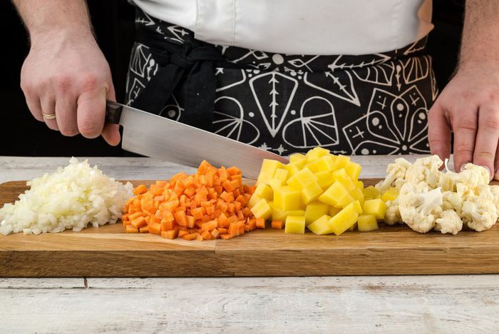
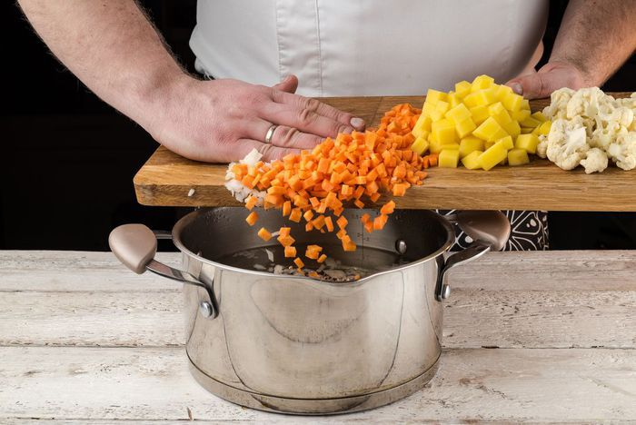
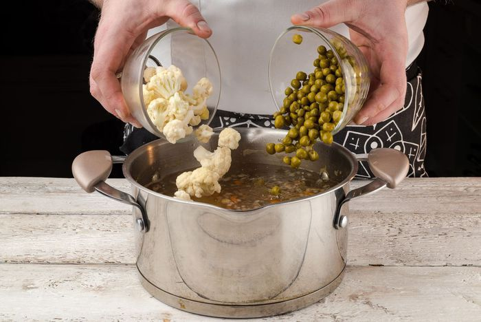
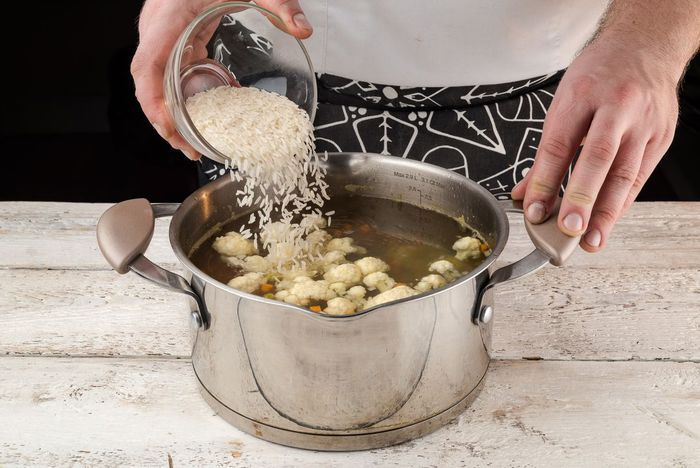
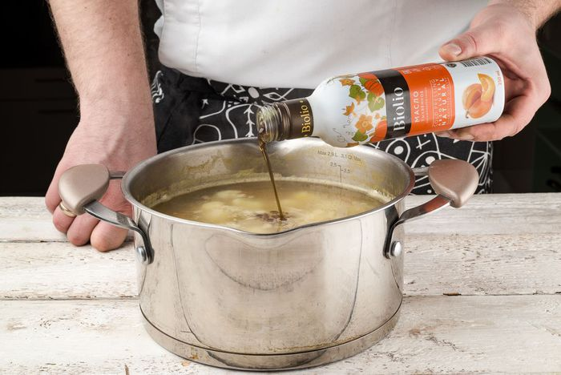
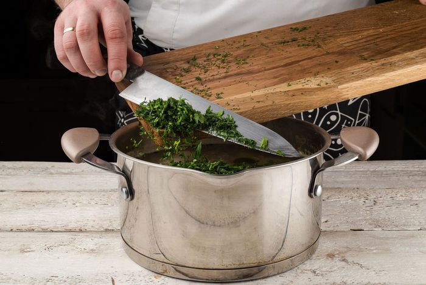
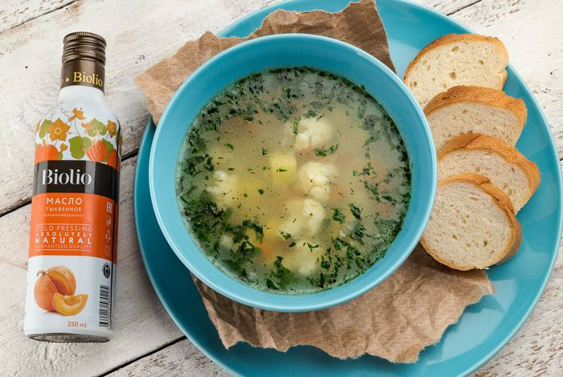

Овощной суп с зелёным горошком
⏱ 25 минут
- Ингредиенты
- капуста цветная: 500 г
- рис: ½ стакана
- морковь: 1 шт.
- лук репчатый: 1 шт.
- картофель: ½ кг
- горошек зеленый консервированный: 1 банка
-
Шаг 1
Овощи помыть и почистить.
-
Шаг 2
Лук, картофель и морковь нарезать кубиками. Цветную капусту разобрать на соцветия.
-
Шаг 3
Картофель, лук и морковь положить в кипящую воду и варить 15 минут.
-
Шаг 4
Добавить зеленый горошек и цветную капусту.
-
Шаг 5
Добавить промытый рис.
-
Шаг 6
В процессе приготовления добавить в суп специи по вкусу и заправить тыквенным маслом.
-
Шаг 7
Зелень измельчить и добавить в суп.
-
Шаг 8
Приятного аппетита!